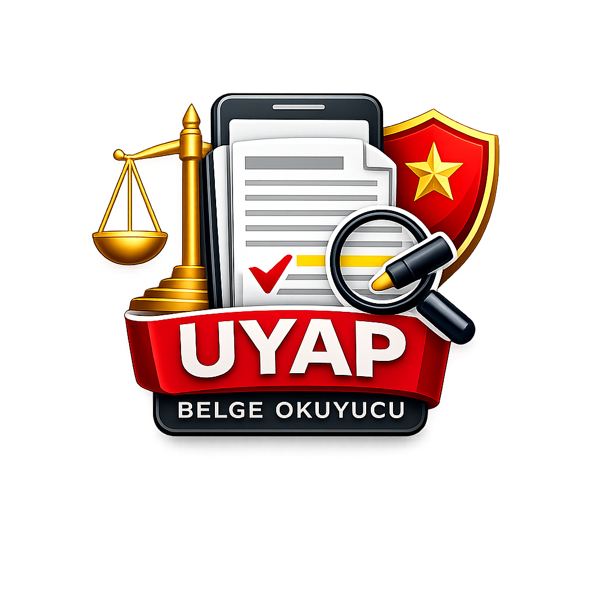

Hukukçular İçin Akıllı Dijital Arşiv ve UYAP Dosya Görüntüleyici
Mahkeme evrakları, UYAP dosyaları ve taranmış belgeler arasında kaybolmaktan yoruldunuz mu? Dava Belgelerim, avukatların ve hukuk profesyonellerinin günlük dosya okuma ve inceleme süreçlerini tamamen dijitalleştiren kişisel arşiv asistanınızdır.
Binlerce sayfalık dava dosyalarını çantanızda veya bilgisayarınızın dağınık klasörlerinde taşımak yerine; tüm belgelerinizi cebinizde toplayabilir, üzerlerinde notlar alarak dosya inceleme süreçlerinizi hızlandırabilirsiniz.
Farklı formatlardaki dava dosyalarını açabilmek için bilgisayarınıza veya telefonunuza onlarca program kurmanıza gerek kalmaz:
UYAP sistemine özel .udf uzantılı dava dosyalarını, resmi .pdf evraklarını ve taranmış adli evrakları (.tiff) tek bir uygulama içerisinden kolayca açıp okuyabilirsiniz.
Tarayıcılardan kalitesiz veya karanlık şekilde taranmış adli belgelerin arka planını bembeyaz, yazılarını ise koyu siyah yaparak metinlerin okunmasını kolaylaştırır ve bunları doğrudan PDF formatına çevirir.
Bilgisayarınızdaki herhangi bir UDF dosyasına çift tıkladığınızda sistem otomatik olarak bu uygulamayı açarak size hız kazandırır.
UDF ve TIFF gibi açılması zor olan özel hukuki belge formatlarını, herkesin okuyabileceği evrensel PDF standartlarına dönüştürerek paylaşın ve zaman kazanın:
UYAP'tan indirilen .udf dosyalarını doğrudan gönderdiğinizde karşı taraf bu formatı açamaz. Uygulama sayesinde incelediğiniz dava dilekçesini veya mahkeme kararını tek tıkla otomatik olarak PDF'e dönüştürerek doğrudan WhatsApp veya e-posta üzerinden müvekkillerinizle paylaşabilirsiniz.
Eski nesil tarayıcılardan çıkmış kararmış, okunaksız TIFF evraklarını uygulama üzerinde netleştirip bembeyaz bir PDF haline getirdikten sonra meslektaşlarınıza, stajyerlerinize veya mahkemeye sunulacak temiz bir biçimde gönderebilirsiniz. (Gelişmiş TIFF paylaşımı Premium ayrıcalığıdır).
UDF veya taranmış evrakları sadece görüntülemekle kalmayın; cihazınıza doğrudan standart PDF formatında kaydederek arşivleyebilir veya yazdırmak üzere hazır hale getirebilirsiniz.
Tek tek dosya açıp kaydetme zahmetine son verin! Yüzlerce UDF veya taranmış TIFF belgesi içeren bir klasörü (müvekkil adı > dava yılı > duruşma evrakları gibi alt klasörler de dahil) sisteme gösterip, arka planda otomatik olarak PDF'e dönüştürerek temiz bir arşiv klasörüne aktarabilirsiniz. Dönüşüm öncesi bulunan dosya sayısını görebilir, gerçek zamanlı ilerleme takibi yapabilir ve dilediğiniz an işlemi durdurabilirsiniz.
Arşivinizdeki belgeleri tek tek açıp okumak zorunda kalmadan aradığınız bilgiye anında ulaşın:
Bilgisayarınızdaki veya telefonunuzdaki bir klasörü seçerek, alt klasörler de dahil olmak üzere içerisindeki tüm dava evraklarını tek seferde arşivinize yükleyebilirsiniz.
Dosyalarınızı tek tek açmakla vakit kaybetmeyin. Aradığınız bir müvekkil ismini, kanun maddesini veya kelimeyi arama çubuğuna yazın; asistanınız hangi dosyalarda bu kelimenin geçtiğini saniyeler içinde bulup çıkarsın.
Belge metnini tarayan akıllı asistanınız, evrakın hangi mahkemeye, dairesine veya başsavcılığa ait olduğunu otomatik tespit eder ve arşivinizi sizin yerinize düzenler.
Açık olan belgenin içinde aradığınız kelimelerin geçtiği paragrafı anında bulur ve sayfayı otomatik olarak o satıra kaydırır.
Dijital dünyada da tıpkı basılı kağıtlar üzerinde çalışıyormuş gibi rahat edin:
Belgeyi incelerken önemli gördüğünüz satırların veya delil kısımlarının üzerini fosforlu kalemle çizerek belirginleştirebilirsiniz.
Mahkeme evrakının yanına kendi savunma stratejilerinizi, hatırlatmalarınızı veya hukuki notlarınızı ekleyebilirsiniz.
Evraka eklediğiniz tüm notlar ve çizimler cihazınızda saklanır. Aynı dava dosyasını günler sonra tekrar açtığınızda tüm notlarınızı tam bıraktığınız yerde bulursunuz.
Yoğun çalışma saatlerinde gözlerinizi yormayan ve geçmişe kolayca erişmenizi sağlayan pratik özellikler:
Koyu renkli ekran tasarımı seçeneğiyle, özellikle gece saatlerinde veya düşük ışıkta gözleriniz yorulmadan çalışabilirsiniz.
Yazı boyutunu tek hareketle büyütebilir veya küçültebilirsiniz; telefon ve bilgisayar ekranlarına göre en rahat okuma ölçeği otomatik ayarlanır.
En son açtığınız belgelere göreli tarihlerle ("Bugün 14:30", "Dün sabah") kolayca erişin ve okumaya tam kaldığınız yerden başlayın.
Savunma dosyalarınızın ve hassas verilerinizin gizliliğini mesleki sorumluluğumuz olarak görüyoruz.
Uygulamada açtığınız dava belgeleri, dilekçeler, notlar ve imzalar asla harici bir internet sunucusuna yüklenmez, depolanmaz ve işlenmez. Tüm dosya açma, temizleme, arama ve not ekleme işlemleri doğrudan kendi bilgisayarınızda veya telefonunuzda gerçekleştirilir. Belgeleriniz sadece sizin kontrolünüzdedir.
Dava Belgelerim uygulamasını cihazınıza indirerek dava dosyalarınızı düzenlemeye ve akıllı arşivinizi oluşturmaya hemen başlayabilirsiniz.
Akıllı Dijital Arşiv ve UYAP Dosya Görüntüleyicinizi ücretsiz edinin.
Yükleyiciyi İndirGoogle Play Store üzerinden veya APK olarak yükleyin. UYAP belgelerini hızlıca açın, inceleyin ve dönüştürün.
Play StoreApp Store üzerinden indirin. iPad veya iPhone cihazınızda davalarınızı taşınabilir ve pratik olarak inceleyin.
App StorePardus ve Debian tabanlı Linux dağıtımları için kurulum paketi. Akıllı Dijital Arşiv ve UYAP Dosya Görüntüleyicinizi ücretsiz edinin.
Yükleyiciyi İndir